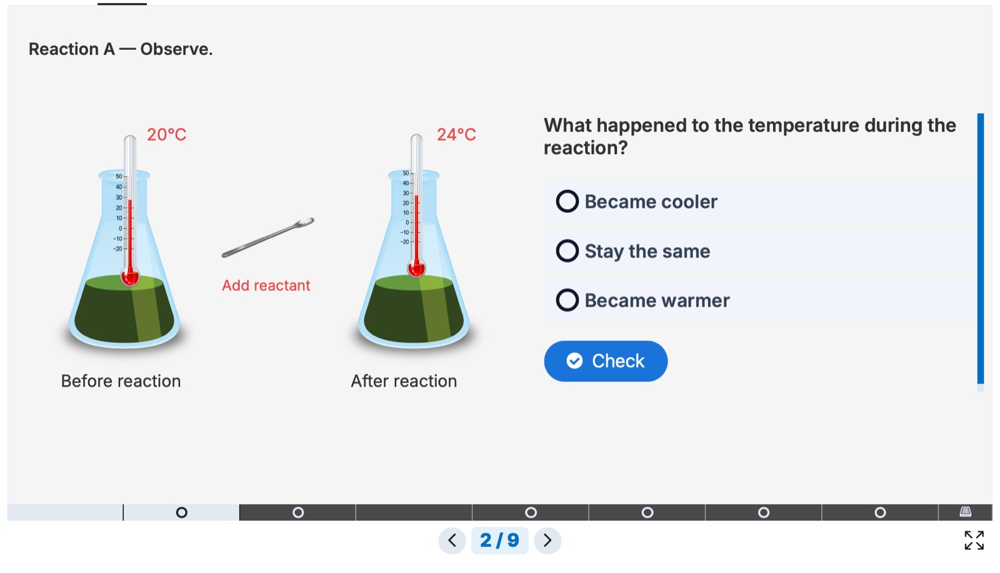
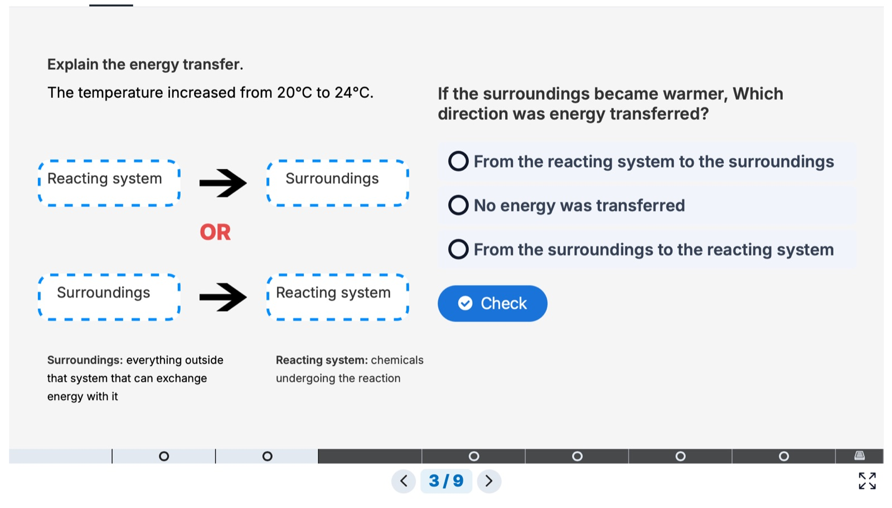
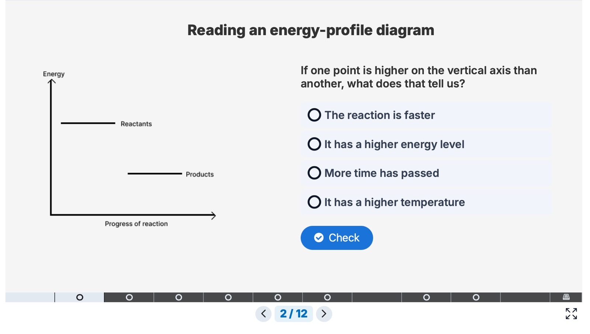
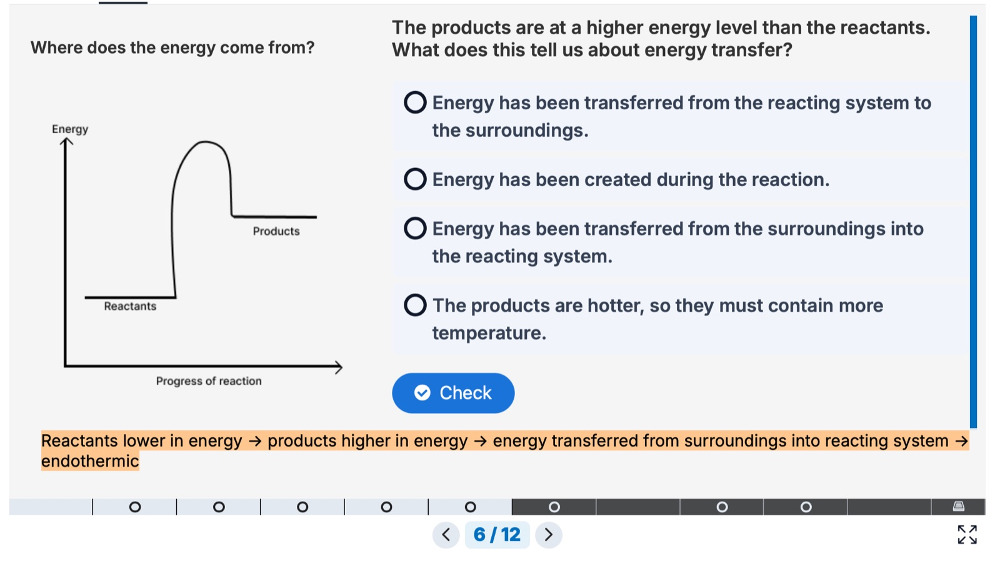
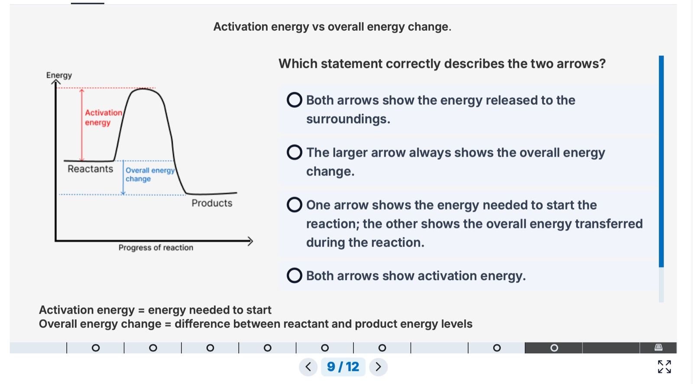
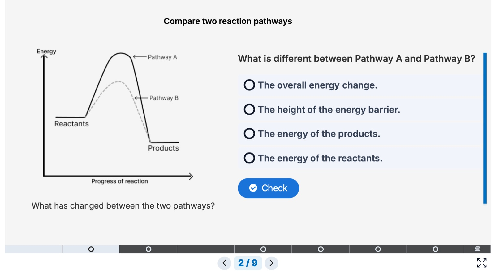
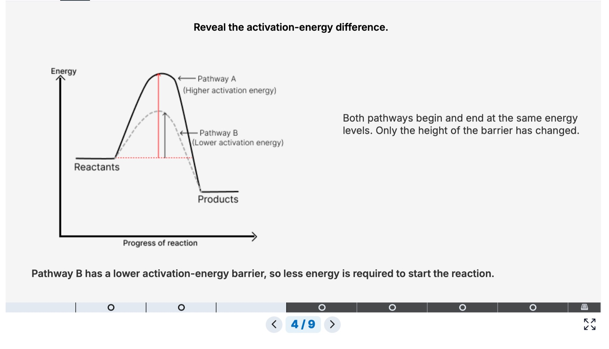
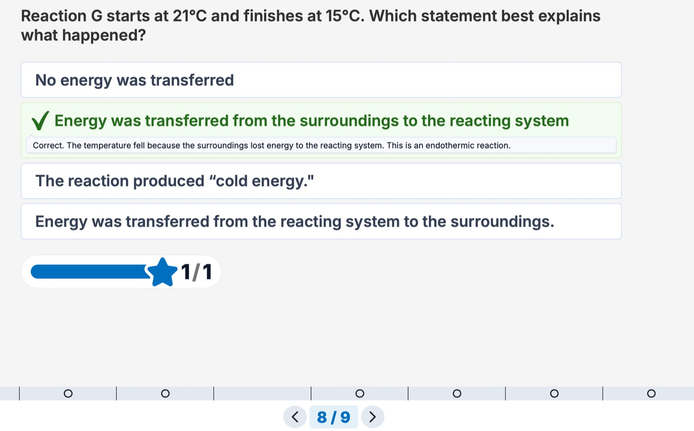
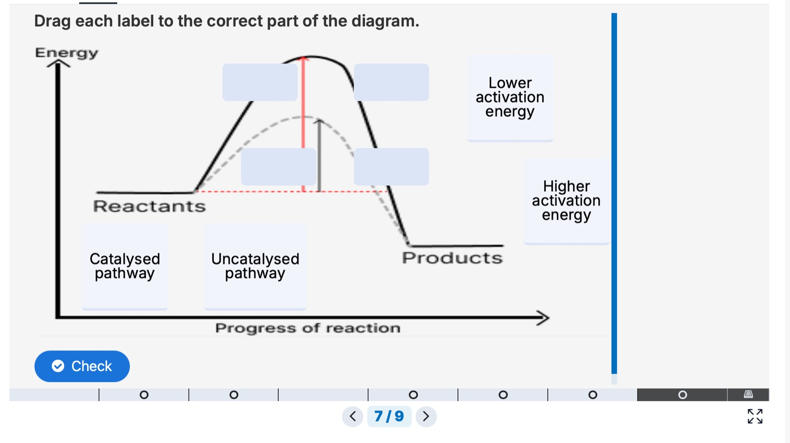

Making Energy Changes Visible
An interactive secondary chemistry learning experience exploring exothermic and endothermic reactions, energy profiles, activation energy and catalysts.
The idea
I designed a three-part interactive learning pathway that moves learners from observable temperature changes to abstract energy-profile diagrams and catalyst pathways, using targeted feedback to address common misconceptions. It is a self-initiated project, planned in Figma and built in H5P with Lumi, with a focus on curriculum sequencing, misconceptions, interaction design and assessment.

How it went
- 01Four misconceptions written down before any screen
- 02A three-part pathway: observe, model, apply
- 03Experience 1: thermometers before terminology
- 04Experience 2: two arrows on one diagram
- 05Experience 3: catalysts change the pathway
- 06Feedback woven through, not saved for the end
- 07Accessibility pass: hierarchy, load, drag alternatives
- 08Tested with Year 10 and 11; more scaffolding added
Design process
The learning challenge
Energy changes in chemical reactions are difficult because learners must connect observable temperature changes with abstract ideas about energy transfer, reaction profiles and activation energy. These concepts are also prone to misconceptions, especially when learners treat “exothermic” as simply meaning hot, confuse activation energy with energy released, or assume catalysts add energy to a reaction. The four I designed against are in the table further down.
The learning pathway
To address these misconceptions, I designed a three-part sequence that moves learners from observable evidence to abstract representation and application. Observe and investigate: learners explore real-world scenarios and simple experiments to observe temperature changes and identify whether reactions release or absorb heat. Model and explain: learners connect observations to energy-profile diagrams to explain activation energy and overall energy change. Apply and extend: learners examine catalysts and compare pathways, applying their understanding to new contexts and prediction tasks.
Experience 1: observe and explain
The first experience begins with something learners can observe directly, like temperature change. From there, the activities guide them towards explaining the direction of energy transfer before introducing the terms exothermic and endothermic.
I began with measured temperature change rather than scientific terminology, giving learners a concrete observation to reason from. The terms were introduced only after learners had identified the direction of energy transfer. Later activities ask learners to classify reactions independently, using temperature evidence without step-by-step prompts.


Experience 2: represent
The second experience moves learners from observable temperature change to energy-profile diagrams. Learners interpret reactant and product energy levels, identify activation energy, and distinguish it from the overall energy change.
Diagrams were introduced only after learners had already reasoned about energy transfer from temperature evidence. Activation energy and overall energy change were represented with different arrows so learners could compare where each quantity begins and ends, and see that both exothermic and endothermic reactions require activation energy even though their overall energy changes are different.



Experience 3: apply
The final experience helps learners apply their understanding by exploring how catalysts provide an alternative reaction pathway. Learners compare reactions with and without a catalyst and explain why the reactant and product energy levels, and therefore the overall energy change, remain unchanged.
The activities highlight what stays the same, so learners can distinguish between a change in activation energy and a change in overall energy change. Learners are then prompted to evaluate statements such as “catalysts add energy” or “catalysts change the overall energy change”, with targeted feedback explaining why these are incorrect.


Assessment and feedback
Assessment was embedded throughout the learning pathway rather than saved for the end. Questions were used to surface misconceptions, check understanding at each stage, and provide immediate feedback that explained why an answer was correct or incorrect.
Early diagnostic questions reveal how learners interpret temperature change, energy transfer and reaction profiles before new terminology is introduced. Incorrect options are based on common misconceptions, so a wrong answer tells me something. Feedback does more than identify right or wrong: it redirects attention to the relevant scientific idea and helps learners distinguish between closely related concepts. The principle I kept returning to is that every incorrect answer should reveal something about the learner’s thinking and provide a useful next step.


Accessibility and inclusive design
Accessibility decisions were built into the learning experience from the start, with attention to clarity, cognitive load, visual hierarchy and the use of multiple ways to represent scientific ideas. Each screen focuses on one key idea, with limited on-screen text and consistent placement of diagrams, questions and feedback.
Learners move between temperature data, energy-transfer language and energy-profile diagrams, which supports connections between observable evidence and abstract models. New terminology is introduced only after learners have first reasoned from evidence, and complex ideas are broken into smaller steps. Interactive tasks use clear labels, concise instructions and immediate feedback, and where possible offer a non-drag alternative for learners who find drag-and-drop difficult to use.
Tools and workflow
I used a combination of tools to design, develop and refine the learning experience, choosing each for the strengths it offered at a different stage. Figma for planning the learning experience, creating the visual design and prototyping the layout and interactions, because it is flexible and ideal for rapid iteration. H5P, through Lumi, to build the interactive activities, including questions, drag-and-drop tasks and branching feedback, because it is open source, easy to use and widely supported. Images and icons from trusted sources to support clarity and accessibility.
Learner testing
I tested selected activities with Year 10 and 11 students in a school setting. Learners needed substantial scaffolding when moving from observable temperature changes to more abstract ideas such as energy profiles and activation energy. A step-by-step introduction of concepts helped them build understanding more successfully.
Learners understood the topic more easily when concepts were introduced in small, sequential steps. Abstract representations such as energy-profile diagrams required more support than observable evidence such as temperature change. Common misconceptions included thinking that catalysts add energy or change the overall energy change.
In response, I increased scaffolding in the early stages of each experience, introduced key terminology only after learners had reasoned from evidence, used repeated visual cues and immediate feedback to reinforce key distinctions, and reduced support gradually as learners moved towards application tasks.
Reflection and next steps
This project strengthened my skills in instructional design and deepened my understanding of how learners build scientific concepts. It also highlighted areas for further development.
What worked well: a clear progression from concrete evidence to abstract representation, interactive tasks that engaged learners and surfaced misconceptions, step-by-step scaffolding that supported understanding of the more complex ideas such as activation energy, and a consistent visual design that kept the focus on one key idea at a time.
What I would improve: explore additional ways to represent abstract ideas, such as animations or interactive simulations; refine the feedback for common misconceptions using a wider range of learner responses; and consider adaptive pathways for learners who need additional support.
Next steps: conduct more extensive user testing with a larger and more diverse group of learners, gather data on how the activities affect understanding and retention over time, adapt the approach for other topics in science, and continue developing my skills in inclusive design and accessible interaction design.
Testing with real learners reinforced the value of a scaffolded, evidence-based approach and showed how thoughtful design can make complex scientific ideas more accessible and engaging.
“The step-by-step explanations really helped. I found it much easier to understand when we looked at the temperature change first before moving to the energy diagram.”
Misconceptions, and how the pathway answers them
What I learned
- Build from observable evidence. A thermometer reading comes before an energy model.
- Separate closely related concepts. Activation energy and overall energy change get their own arrows.
- Use application to challenge misconceptions. Ask what changes with a catalyst, and what stays the same.